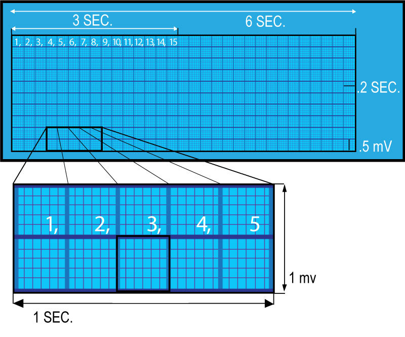

EKG Paper
EKG tracings are recorded on grid paper. The grid paper is broken down into “blocks”. The horizontal axis represents time, and the vertical axis represents EKG amplitude (voltage).
A six second strip has thirty ‘big blocks’, five of those ‘big blocks’ represent 1 second. One ‘big block’ equals 0.2 second. Within one ‘big block are five ‘small blocks’, each representing 0.04 seconds. The black marks at the top of the strip indicate 3 second intervals.

On the vertical axis two ‘big blocks’ equal 1 millivolt (mV). Within the ‘big block’ are five ‘small blocks’ each representing 0.1 mV.